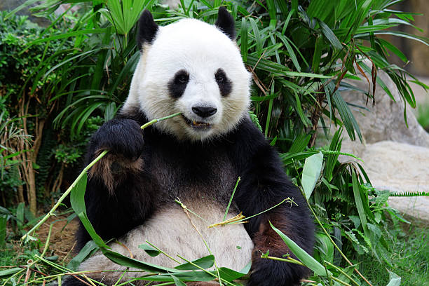

HOME
STORY
CONTACT
Life of a Panda
Pandas are one of the most beloved and iconic animals in the world. They are
native to China and are primarily found in
the central highlands of Sichuan, Shaanxi, and Gansu provinces. Pandas are herbivorous and mainly eat
bamboo, but they
also consume other plant materials like fruits and vegetables. A typical day in the life of a panda
revolves around
eating and sleeping. Pandas spend up to 14 hours a day eating bamboo, which is their primary food source.
They have a
special digestive system that allows them to extract nutrients from the tough bamboo leaves and stems.
Despite this,
pandas are still classified as carnivores because they have the digestive system of a meat-eating animal.
When they're
not eating, pandas spend a lot of time sleeping. They usually sleep for up to 12 hours a day,
and they prefer to sleep in trees or on the ground in hidden locations
facts of panda
- Pandas are a species of bear that are native to central China.
- They are known for their distinctive black and white markings.
- Pandas are classified as an endangered species, with an estimated 1,800 remaining in the wild.
- They primarily eat bamboo, but will also consume small animals and fish.
Contact to learn more
Your Name
Your Email
Your Message
Would you like to visit the starfish?
@copyright 2022